Metafile Object Specifications
The following sections contain descriptions of all currently valid metafile objects. Each section concerns a particular type of metafile object, and indicates the required form of specification for objects of that type in text files and in binary files. Each section also includes an example of a valid text file object specification and other pertinent information.Special Metafile Objects
This section describes seven special metafile objects.3D Metafile Header
Labels
- ASCII
3DMetafile- Binary
3DMF(=0x33444D46)
metafile flags
Normal 0x00000000 Stream 0x00000001 Database 0x00000002Constant descriptions
Normal- This flag indicates that, for every shared object specified in the metafile, if that object is instanced more than once in the metafile, then all instantiations of that object other than its original specification are accomplished through the use of file pointers and reference objects. If this flag is set, then the full specification of an object never appears more than once in the metafile. In order to read a normal metafile, a parser should have random access to that file.
Stream- This flag indicates that there are no internal references in the metafile. (A reference in a file to an object located in the same file is termed internal; a reference in a file to an object located in a different file is termed external.) In order to read a stream metafile, a parser need have sequential access only.
Database- This flag indicates that every shared object in the metafile that is not itself a reference object is the target object of a file pointer appearing in a table of contents in the metafile. All of the contents of a database metafile may be discovered by a parser through examination of its tables of contents.
Data Format
Uns16 majorVersion Uns16 minorVersion MetafileFlags flags FilePointer tocLocationField descriptions
-
majorVersion - The version number of the metafile. Currently, the version number is 1.
minorVersion- The revision number of the metafile. Currently, the revision number is 0.
flags- The flag of the header.
tocLocation-
A file pointer
to the location (in the metafile) of a table of contents
object. If the value in this field is
NULL, then the entire metafile must be parsed in order to find any extant tables of contents.
Data Size
20Description
A metafile header is a structure having four fields. The first two fields specify the version and revision numbers of the metafile. The third field contains a flag indicating the type of the metafile (normal, stream, or database). The fourth field contains a pointer to the location of a table of contents for the metafile. A metafile header in a file indicates that the file is a metafile and provides some information about its contents.Each metafile must contain exactly one metafile header, and this header must precede every other object in that file. Though each metafile header contains a pointer to the location of a table of contents, there need be no corresponding table of contents in the metafile.
Parent Hierarchy
3DMF.Parent Objects
None.Child Objects
None.Example
3DMetafile ( 1 0 # majorVersion, minorVersion Normal # flag toc> # file pointer ) . . . # list of objects toc: TableOfContents ( ... )
Tables of Contents
Labels
- ASCII
TableOfContents- Binary
toc (=0x746F6320)
Data Type Definition: toc entry type 0
TOCEntry ( Uns32 refID FilePointer objLocation )
Size
12Data Type Definition: toc entry type 1
TOCEntry ( Uns32 refID FilePointer objLocation ObjectType objType )
Size
16Field descriptions
refID- The value of the
refIDfield of a reference object.
objLocation- A pointer to the location of a referenceable metafile object.
objType- The type tag of the target object of the file pointer
listed in the
objLocationfield. - Note
- Type 1 table of contents entries allow a parser to determine the type of a referenced object by inspection of tables of contents; type 0 table of contents entries do not. The table of contents entries in a stream metafile normally are of type 0; the table of contents entries in a database metafile normally are of type 1. ·
Data Format
FilePointer nextTOC Uns32 refSeed Int32 typeSeed Uns32 tocEntryType Uns32 tocEntrySize Uns32 nEntries TOCEntry tocEntries[nEntries]Field descriptions
nextTOC- A pointer to the location of the next table of contents in the metafile. (If there is no subsequent table of contents, then this pointer is idle.)
refSeed-
The least
integer that may occur in the
refIDfield of a reference object added to the metafile after this table of contents is written. The value in this field must be greater than 0 and is incremented whenever a new reference object is added to the preceding section of the metafile or is listed in a TOC entry added to this table of contents. typeSeed- The greatest integer that may occur in the
typeIDfield of a type object added to the metafile after this table of contents is written. The value in this field must be less than 0 and is decremented whenever a new type object is added to the preceding section of the metafile. tocEntryType- A numerical constant that indicates the type of the
entries contained in the table of contents. The permitted
values of this field are 0 and 1. A value of 0 indicates that
all entries in the array
tocEntries[]are of type 0; a value of 1 indicates that all entries in that array are of type 1. The occurrence of this constant should cause no confusion, as all entries in any particular table of contents must be of the same type. tocEntrySize- A numerical constant that indicates the binary sizes of the entries contained in the table of contents. The permitted values of this field are 12 and 16. If the value in the previous field is 0, then the value in this field must be 12; if the value in the previous field is 1, then the value in this field must be 16. Again, this constant should cause no confusion, as all entries in any particular table of contents must be of the same size.
nEntries-
The number of
entries contained in the table of contents; that is, the
size of the array
tocEntries[]. If the value in this field is 0, then that array is empty. tocEntries[]- An array of
TOCEntryobjects, all of which are of the same entry type.
Data Size
20 + (tocEntrySize * nEntries)
Description
A table of contents is a structure that provides a record of associations made between reference objects and file pointers. These associations are reported by the TOC entries of the table of contents. A metafile reader must use its tables of contents to discover linkages between reference objects and file pointers, as there is no other record of those associations. See the sections "File Pointers" on page 1-24 and "Reference Objects" on page 1-37 for complete details regarding these objects.A reference in a file to a target object located in the same file is termed internal; a reference in a file to a target object located in a different file is termed external. A metafile in which there are internal references or file pointers whose target objects are not tables of contents must include at least one table of contents.
If a metafile contains more than one table of contents, then each table of contents should continue the record provided by the immediately previous table of contents (if such exists) without duplication. A table of contents may contain information about objects occurring before or after it or both, but should not contain information about any object that either precedes an object mentioned in a previous table of contents or follows an object mentioned in a subsequent table of contents.
Parent Hierarchy
3DMF.Parent Objects
None.Child Objects
None.Example
3DMF ( 1 0 Normal toc> ) . . . cube: box ( ... ) rotateTransform( ...) Reference ( 1 ) # internal reference . . . scaleTransform ( . . . ) Container ( Reference (4) # external reference UnixPath ( ".../geometryobjecs/ellipsoids/elli.1.a" ) ) . . . Type ( -1 "Lino" ) . . . tory: Torus ( ... ) . . . Reference (2) . . . Reference ( 1 ) . . . Reference ( 1 ) . . . toc: TableOfContents ( nextTOC> 5 # refSeed -2 # typeSeed 0 # tocEntryType 12 # tocEntrySize 2 # nEntries 1 cube> # TOCEntries 2 tory> )
Reference Objects
Labels
- ASCII
Reference- Binary
rfrn (=0x7266726E)
Data Format
Uns32 refIDField descriptions
refID- A nonnegative integer. If the value in this field is not 0, then this reference object is linked to a file pointer and is used to reference the target object of that file pointer. If the value in this field is 0, then this reference object is not linked to a file pointer. A value of 0indicates that the object to be referenced is an entire file rather than an object located within a file. The relevant file is specified in a storage object that occurs as a child object to the reference object.
Data Size
4Description
A reference object is used to permit an object defined elsewhere to be referenced at one or more locations in a metafile. A reference in a file to a target object located in the same file is termed internal; a reference in a file to a target object located in a different file is termed external.A reference object and the object it is intended to reference may be contained in separate files. In such a case, the reference object must also have, as a child object, a storage object that indicates the location of the home file of the object to be referenced. See the sections "UNIX Path" on page 1-39 and "Macintosh Path" on page 1-41 for descriptions of these objects. See the section "File Pointers" on page 1-24 for an explanation of the relationships that must obtain among a reference object, a table of contents, and a file pointer in order for that reference object to serve its purpose.
Parent Hierarchy
Shared.Parent Objects
A reference object sometimes but not always has a parent object.Child Objects
One UNIX path or Macintosh path object (optional). A reference object must contain a child object whenever the object it is used to reference is (or is located in) a separate file.Example
. . . Reference ( 23 ) #internal reference . . . toc: TableOfContents nextTOC> 35 -1 0 12 . . . 20 CarFrame> 21 Axle> 23 WheelOfCar> . . . ) . . . Container ( #external reference Reference ( 23 ) UnixPath ( ".:car:parts.eb" ) #Unix pathname Object )
UNIX Path
Labels
- ASCII
UnixPath- Binary
unix (= 0x756E6978)
Data Format
String unixPathField descriptions
unixPath- A character string consisting of a pathname enclosed in double quotation marks.
Data Size
sizeof(pathName)
Description
A UNIX path object may occur only as the child object of a reference object. Its purpose is to allow a reference object located in one file to reference an object located in another file. The file pointer, label, and table of contents entry associated with the parent reference object are located in the home file of the target object.Parent Hierarchy
Shared, Storage.Parent Objects
Always.Child Objects
None.Example
Container ( #external reference Reference ( 23 ) UnixPath ( ".:Graphics:Models:Conics:Cone.3" ) )
- Note
- In the above example, the object to be referenced is in the file Cone.3. The file reader must open that file and search its tables of contents to find the file pointer associated with the integer 23 in order to locate that object. ·
Macintosh Path
Labels
- ASCII
MacintoshPath- Binary
alis( =0x616C6973)
Data Format
String pathNameField descriptions
pathName- A character string consisting of a Macintosh pathname enclosed in double quotation marks. The pathname should be specified in accordance with Macintosh pathname conventions.
Data Size
sizeof(String)
Description
A Macintosh path object may occur only as the child object of a reference object. Its purpose is to allow a reference object located in one file to access a target object located in another file. The file pointer, label, and table of contents entry associated with the parent reference object are located in the home file of the target object. This object may be used only on platforms running on the Macintosh Operating System.PARENT HIERARCHY
Shared, storage.Parent Objects
Always. This object may occur only as the child object of a reference object.Child Objects
None.Example
Container ( Reference ( 17 ) MacintoshPath ( ... :3DGraphics:Models:Stemware.2 )
- Note
- In the above example, the object to be referenced is in the file Stemware.2. The file reader must open that file and search its tables of contents to find the file pointer associated with the integer 17 in order to locate that object. ·
Types
Labels
- ASCII
Type- Binary
type (=0x74797065)
Data Format
Int32 typeID String ownerField descriptions
typeID- A negative integer. No two type objects in the same file may have the same value in this field.
owner- An ISO 9070 registered owner string. The value of this field may not occur in any other type object.
Data Size
4 +sizeof(String)
Description
The metafile file format permits the inclusion of custom objects, provided that they have been assigned a type. The type object is used to declare a custom data type, and must be used whenever a custom data type appears in a metafile. A type object must appear in a file prior to any custom object of that type. At most 231 (= 2,147,483,648) custom types may appear in a single file.- Note
- To include a custom object in a binary metafile, you must
specify the size of that object, padded to the nearest byte.
To include a custom object in a text metafile, enclose the
object in parentheses and prefix the object's
typeIDnumber. ·
Parent Hierarchy
3DMF.Parent Objects
None.Child Objects
None.Example
Type ( -1 "Program: Tree" ) Type ( -1 "Program: Forest" )
Containers
Labels
- ASCII
Container- Binary
cntr( =0x636E7472)
Data Format
No data.Data Size
8k + S, where k is the number of elements of the container and S is the sum of the sizes of those elements.Description
A container is an ordered collection of objects. Containers are used to form complex objects from simpler objects in ways permitted by the structure of the metafile object hierarchy. In particular, child objects are attached to parent objects through the use of containers. Every container must contain at least one object. Containers may be nested. The relation of containment is not transitive (that is, the elements of a container occurring within another container are not themselves elements of the latter container). However, an object may be instantiated more than once in a hierarchy of nested containers, as shown in the example at the end of this section.The notation for containers in text files is as follows:
Container ( object0 . . . objectnobjects-1 )Notations for contained objects are separated by blank spaces rather than by punctuation marks, as is the case in the notation for other objects having nonzero size.
The first element of a container is called the root object of that container. The root object of a container must be a shared object, may not be a container itself, and may not be the target object of a file pointer. The position in the metafile object hierarchy of the root object of a container constrains the number, type, and in some cases the order of occurrence of other elements of that container. Each element of a container other than the root object must be either a legitimate child object of the root object or another container. In the latter case, the root object of the inner container must be a legitimate child object of the root object of the outer one.
A container may be the target object of a file pointer.
Parent Hierarchy
3DMF.Parent Objects
None.Child Objects
None.Example
Container ( Cylinder ( . . . ) Container ( AttributeSet ( ) DiffuseColor ( 0 1 0 ) ) Caps ( Bottom ) Container ( BottomCapAttributeSet ( ) Container ( AttributeSet ( ) DiffuseColor ( 0 1 0 ) ) ) )
String Objects
C Strings
Labels
- ASCII
CString- Binary
strc( =0x73747263)
Data Format
String cStringField descriptions
cString-
A string
constant (that is, a sequence of ASCII characters enclosed
in double-quotation marks). See the section "Strings" on page
1-23 for a list of the escape sequences that may occur
in a
cStringobject.
Data Size
sizeof(String)
Description
A C string may be used to include text in a metafile.Parent Hierarchy
Shared, string.Parent Objects
None.Child Objects
None.Example
cString ( "Copyright Apple Computer, Inc., 1995" )
Unicode Objects
Labels
- ASCII
Unicode- Binary
uncd( =0x756E6364)
Data Format
uns32 length RawData unicode[length * 2]Field descriptions
length- The length of the encoded text.
unicode[]- An array of raw data that encodes text.
Data Size
4 + length * 2Description
A unicode object may be used to include text in a binary metafile.Parent Hierarchy
Shared, String.Parent Objects
None.Child Objects
None.Example
Unicode ( 6 0x457363686572 )
Geometric Objects
This section describes the geometric objects currently supported by the metafile specification.Points
Labels
- ASCII
Point- Binary
pnt( =0x706E7420)
Data Format
Point3D pointField descriptions
point- A three-dimensional point.
Data Size
12Description
A point object is used to specify a point in world space. A point object may appear only in a group or as part of the definition of a custom data type. Unlike the corresponding point data type, a geometric point object may be assigned attributes such as color. Thus, an application may use point objects to specify visible dots.Default Surface Parameterization
None.Parent Hierarchy
Shared, shape, geometry.Parent Objects
None.Child Objects
Attribute set (optional).EXAMPLE
Point ( 0 0 0 )
Default Size
None.Lines
Figure 1-3 shows a line.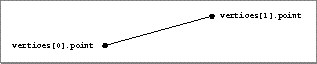
Labels
- ASCII
Line- Binary
line( =0x6C696E65)
Data Format
Point3D start Point3D endField descriptions
start- One endpoint of the line.
end- The other endpoint of the line.
Data Size
24Description
A line is a straight segment in three-dimensional space defined by its two endpoints. Attributes may be assigned to the vertices of a line and to the entire line.Default Surface Parameterization
The default surface parameterization for a line is (0, 0) atstart and
(1, 0) at end.
Parent Hierarchy
Shared, shape, geometry.Parent Objects
None.Child Objects
Attribute set (optional), vertex attribute set list (optional). An attribute set may be used to assign attributes to the entire line. The vertex attribute set list may include attribute sets for one or both vertices of the line. For the purpose of attribute assignment, thestart and end vertices of a line are
indexed by the integers 0 and 1 respectively. See the section
"Vertex Attribute
Set Lists" on page 1-141 for a description of these lists.
EXAMPLE
Container ( Line ( 0 0 0 1 0 0 ) Container ( VertexAttributeSetList ( 2 Exclude 0 ) Container ( AttributeSet ( ) DiffuseColor ( 1 0 0 ) ) Container ( AttributeSet ( ) DiffuseColor ( 0 0 1 ) ) ) )
Default Size
None.Polylines
Figure 1-4 shows a polyline.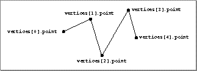
Labels
- ASCII
Polyline- Binary
plin( =0x706C696E)
Data Format
Uns32 numVertices Point3D vertices[numVertices]Field descriptions
numVertices- The number of vertices of the polyline.
vertices[]- An array of vertices that define the polyline.
Data Size
4 +(numVertices * 12)
Description
A polyline is a collection of n lines defined by the n+1 points that define the vertices of its segments. For 1i n-1, the second vertex of the ith line is the first vertex of the i+1st line; the n+1st vertex of a polyline is not connected to the first. Attributes may be assigned separately to each vertex and to each segment of a polyline as well as to the entire polyline.Default Surface Parameterization
None.Parent Hierarchy
Shared, shape, geometry.Parent Objects
None.Child Objects
Attribute set, geometry attribute set list, vertex attribute set list. Use a vertex attribute set list to assign attribute sets to as many vertices as desired; use a geometry attribute set list to assign attribute sets to as many segments as desired. Use an attribute set to assign attributes to the entire polyline.Example
PolyLine( 5 #numVertices 0 0 0 #first vertex 1 1 0 #second vertex .5 .5 0 0 1 0 1 1 0 )
Default Size
None.Triangles
Figure 1-5 shows a triangle.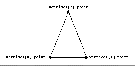
Labels
- ASCII
Triangle- Binary
trng( =0x74726E67)
Data Format
Point3D vertices[3]Field descriptions
vertices[]- An array of triangle vertices.
Data Size
36Description
A triangle is a closed plane figure defined by three vertices. Attributes may be assigned to each vertex of a triangle and also to its entire face.Default Surface Parameterization
None.Parent Hierarchy
Shared, shape, geometry.Parent Objects
None.Child Objects
Vertex attribute set list (optional), attribute set (optional). A vertex attribute set list may be used to attach attributes to one or more vertices of the triangle. An attribute set may be used to attach attributes to the entire face of the triangle.Example
Container ( Triangle ( -1 -0.5 -0.25 0 0 0 -0.5 1.5 0.45 ) Container ( VertexAttributeSetList ( 3 Exclude 0 ) Container ( AttributeSet ( ) DiffuseColor ( 1 0 0 ) ) Container ( AttributeSet ( ) DiffuseColor ( 0 1 0 ) ) Container ( AttributeSet ( ) DiffuseColor ( 0 0 1 ) ) ) Container ( AttributeSet ( ) DiffuseColor ( 0.8 0.5 0.2 ) ) )
Default Size
None.Simple Polygons
Figure 1-6 shows a simple polygon.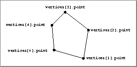
Labels
- ASCII
Polygon- Binary
plyg( =0x706C7967)
Data Format
uns32 nVertices Point3D vertices[nVertices]Field descriptions
nVertices- The number of vertices of the polygon.
vertices[]- An array of vertices that define the polygon.
Data Size
4 + (numVertices * 12)
Description
A simple polygon is a convex plane figure defined by a list of vertices. In other words, a simple polygon is a polygon defined by a single contour. (Vertices are assumed to be coplanar to within floating-point tolerances.) The lines connecting the vertices of a simple polygon do not cross. Attributes may be assigned to each vertex of a simple polygon and also to its entire face.Default Surface Parameterization
None.Parent Hierarchy
Shared, shape, geometry.Parent Objects
None.Child Objects
Vertex attribute set list (optional), attribute set (optional). A vertex attribute set list may be used to attach attribute sets to one or more vertices of the simple polygon. An attribute set may be used to attach attributes to the entire face of the simple polygon. For the purpose of attribute assignment, the vertices of a polygon are indexed by position in the arrayvertices[]; that
is, the index of vertices[i] is i. See the
section "Vertex
Attribute Set Lists" on page -24 for an explanation of the
structure and syntax of these objects.
Example
Polygon( 5 #nVertices 0 0 0 1 0 0 2 1 0 1 2 0 0 1 0 )
Default Size
None.General Polygons
Figure 1-7 shows a general polygon.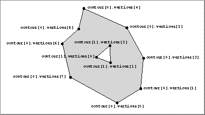
Labels
- ASCII
GeneralPolygon- Binary
gpgn( =0x6770676E)
Polygon data data type
uns32 nVertices
Point3D vertices[nVertices]
nVertices The number of vertices of this contour of the general polygon.
vertices[]- An array of vertices that define this contour of the general polygon.
Data Format
Uns32 nContours PolygonData polygons[nContours]Field descriptions
nContours- The number of contours of the general polygon.
polygons[]- An array of contours that define the general polygon.
Data Size
sizeof(PolygonData) = 4 + nVertices *
12
sizeof(GeneralPolygon) = 4 +
sizeof(polygons[0...nContours-1])
Description
A general polygon is a closed plane figure defined by one or more lists of vertices. In other words, a general polygon is a polygon defined by one or more contours. Each contour may be concave or convex, and contours may be nested. All contours, however, must be coplanar. A general polygon can have holes in it. If it does, the even-odd rule is used to determine which regions are included in the polygon. Attributes may be assigned to each vertex of each contour of a general polygon and to the entire general polygon.Default Surface Parameterization
None.Parent Hierarchy
Shared, shape, geometry.Parent Objects
None.Child Objects
Attribute set, general polygon hint, vertex attribute set list (all optional). Use an attribute set to attach attributes to an entire general polygon. Use a general polygon hint to specify whether a general polygon is concave, convex, or complex; see the section "General Polygon Hints" on page 1-64 for complete details on this object. Use a vertex attribute set list to assign attributes to the vertices of the contours of a general polygon. For purposes of attribute assignment, the vertices of a general polygon are indexed in the order of their occurrence in the specification of that polygon; the index does not distinguish between contours. For purposes of attribute assignment, the nth contour of a general polygon is the contour defined by (polygons[n-1])[1], and the
index of the nth contour is n-1. The nth
vertex of a general polygon is the pth vertex of the
mth contour, where
m = max{k nContours : S0i<k-1 (polygons[i])[0] < n},
and n = S0i<m (polygons[i])[0]+ p; the index of the nth vertex of a general polygon is n-1. The pth vertex of the mth contour of a general polygon is the (S0i<m-1 (polygons[i])[0] + p)th vertex of the general polygon; its index is S0i<m-1 (polygons[i])[0] + (p - 1). See the sections "Face Attribute Set Lists" on page 1-137 and "Vertex Attribute Set Lists" on page 1-141 for explanations of the structure and syntax of these objects.
Example
Container ( GeneralPolygon ( 2 # nContours #contour 0 3 # nVertices, contour 0 -1 0 0 # vertex 0 1 0 0 # vertex 1 0 1.7 0 # vertex 2 #contour 1 3 # nVertices, contour 1 -1 0.4 0 # vertex 3 1 0.4 0 # vertex 4 0 2.1 0 # vertex 5 ) Container ( VertexAttributeSetList ( 6 Exclude 2 0 4 ) #see note Container ( AttributeSet ( ) # vertex 1 DiffuseColor ( 0 0 1 ) ) Container ( AttributeSet ( ) # vertex 2 (contour 0) DiffuseColor ( 0 1 1 ) ) Container ( AttributeSet ( ) # vertex 3 (contour 1) DiffuseColor ( 1 0 1 ) ) Container ( AttributeSet ( ) # vertex 5 (contour 1) DiffuseColor ( 1 1 0 ) ) ) Container ( AttributeSet ( ) DiffuseColor ( 1 1 1 ) ) )
- Note
- In the above example, the general polygon has two contours. Each contour is a triangle. The triangles overlap. The intersection of the triangles is included in an even number of contours; thus, it constitutes a hole in the general polygon. The relative complements of the triangles are included in an odd number of contours; thus, they are included in the general polygon. ·
Default Size
None.General Polygon Hints
Labels
- ASCII
GeneralPolygonHint- Binary
gplh( =0x67706C68)
General Polygon HintS
Complex 0x00000000 Concave 0x00000001 Convex 0x00000002Constant descriptions
Complex- The parent general polygon may include concave, convex, and self-intersecting polygons.
Concave- All contours of the parent general polygon are concave and none is self-intersecting.
Convex- All contours of the parent general polygon are convex and none is self-intersecting.
Data Format
GeneralPolygonHintEnum shapeHintField descriptions
shapeHint- The value in this field must be one of the constants defined above.
Data Size
4Description
A general polygon hint object is used to provide a reading application with an indication of the shape of a general polygon.Default Surface Parameterization
None.Parent Hierarchy
Data.Parent Objects
General polygon. A general polygon hint object always has a parent object.Child Objects
None.Example
Container ( GeneralPolygon ( ... ) GeneralPolygonHint ( Complex ) )
Default Value
Complex.
Boxes
Figure 1-8 shows a box.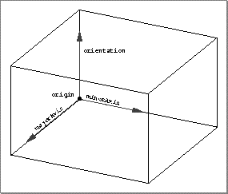
Labels
- ASCII
Box- Binary
box( =0x626F7820)
Data Format
Vector3D orientation Vector3D majorAxis Vector3D minorAxis Point3D originField descriptions
orientation- The orientation of the box.
majorAxis- The major axis of the box.
minorAxis- The minor axis of the box.
origin- The origin of the box.
Data Size
0 or 48Description
A box is a three-dimensional object defined by an origin (that is, a corner of the box) and three vectors that define the edges of the box that meet in that corner. A box may be used to model a cube, rectangular prism, or other parallelipiped. Attributes may be applied to each of the six faces of a box and to the entire geometry of the box.Default Surface Parameterization
The default surface parameterization for a box is as shown in Figure 1-9.Figure 1-9 The default surface parameterization of a box
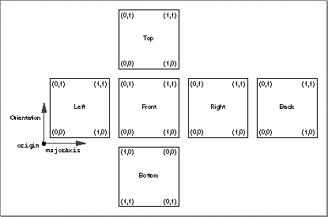
Parent Hierarchy
Shared, shape, geometry.Parent Objects
None.Child Objects
Face attribute set list (optional), attribute set (optional). For the purpose of attribute assignment, the faces of a box are indexed as follows:- 0
- The face perpendicular to the orientation vector having the endpoint of the orientation vector as one of its vertices. In Figure 1-9, this is the top face of the box.
- 1
- The face perpendicular to the orientation vector having the origin as one of its vertices. In Figure 1-9, this is the bottom face of the box.
- 2
- The face perpendicular to the major axis having the endpoint of the major axis as one of its vertices. In Figure 1-9, this is the front face of the box.
- 3
- The face perpendicular to the major axis having the origin as one of its vertices. In Figure 1-9, this is the back face of the box.
- 4
- The face perpendicular to the minor axis having the endpoint of the minor axis as one of its vertices. In Figure 1-9, this is the right face of the box.
- 5
- The face perpendicular to the minor axis having the origin as one of its vertices. In Figure 1-9, this is the front face of the box.
Example
Container ( Box ( ... ) Container ( FaceAttributeSetList (6 Exclude 2 1 4) Container ( AttributeSet ( ) #left face DiffuseColor ( 1 0 0 ) ) Container ( AttributeSet ( ) #bottom face DiffuseColor ( 0 1 1 ) ) Container ( AttributeSet ( ) #top face DiffuseColor ( 0 1 0 ) ) Container ( AttributeSet ( ) #front face DiffuseColor ( 1 0 1 ) ) ) Container ( AttributeSet ( ) DiffuseColor(0 0 0) ) )
Default Size
For objects of size 0, the default isTrigrids
Figure 1-10 shows a trigrid.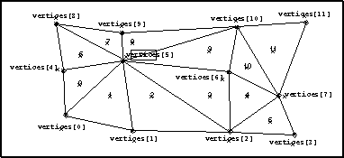
Labels
- ASCII
TriGrid- Binary
trig( =0x74726967)
Data Format
Uns32 numUVertices Uns32 numVVertices Point3D vertices[numUVertices * numVVertices]Field descriptions
numUVertices- The number of vertices in the u parametric direction.
numVVertices- The number of vertices in the v parametric direction.
vertices[]- An array of vertices. The size of this array must equal the number of vertices of the trigrid. Vertices are to be listed in a rectangular order, first in the direction of increasing v, then in the direction of increasing u. That is, the vertex having parametric coordinates (u, v) precedes the vertex having parametric coordinates (u', v') if and only if either u < u', or u = u' and v < v'.
Data Size
8 + (numUVertices * numVVertices *
12)
Description
A trigrid is a grid composed of triangular facets. The triangulation should be serpentine (that is, quadrilaterals are divided into triangles in an alternating fashion) to reduce shading artifacts when using Gouraud or Phong shading. Attributes may be assigned to each vertex and to each facet of a trigrid, and also to the entire trigrid.Parent Hierarchy
Shared, shape, geometry.Parent Objects
None.Child Objects
Vertex attribute set list (optional), face attribute set list (optional), attribute set (optional). A face attribute set list may be used to assign attributes to the facets of a trigrid. The number of facets of a trigrid is the same as the number of its vertices. The vertices and facets of a trigrid are indexed in the manner shown by Figure 1-10. The vertex index prefers u to v and prefers 0 to 1; thus, it follows the canonical lexicographical ordering of the points in uv parametric space. The facet index is less easily defined but is readily apprehended. Consider first the serpentine path through the trigrid along the diagonals belonging to facets of the trigid. Now consider the alternative serpentine path composed of segments connecting all and only those vertices not on the first path. The second path passes through each facet and intersects all of the diagonals on the first path. The facets of the trigrid are numbered in the order that they would be encountered by a traveler along the second serpentine path.Example
Container ( TriGrid ( 3 #numUVertices 4 #numVVertices 2 0 0 2 1 0 2 2 0 2 3 0 1 0 0 1 1 0 1 2 0 1 3 0 0 0 0 0 1 0 0 2 0 0 3 0 ) Container ( FaceAttributeSetList (12 include 6 1 3 5 7 9 11) Container ( AttributeSet( ) DiffuseColor (1 1 1) ) . . . Container ( AttributeSet( ) DiffuseColor (1 1 1) ) ) Container ( AttributeSet ( ) DiffuseColor ( 0 0 0 ) ) )
Default Size
None.Meshes
Figure 1-11 shows a mesh.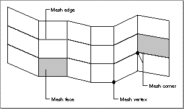
Labels
- ASCII
Mesh- Binary
mesh( =0x6D657368)
Mesh face Data Type
Int nFaceVertexIndices
Uns faceVertexIndices[|nFaceVertexIndices|]
nFaceVertexIndices
An integer the absolute value of which is equal to the number of indices to the vertices of a mesh face or mesh contour: that is, equal to the number of vertices of that face or contour. The value of this field may be positive or negative. A positive value indicates that this mesh face object specifies a face (to which attributes may be assigned). A negative value indicates that this mesh face object specifies a hole (here called a contour). The absolute value of the value in this field must be at least 3.
faceVertexIndices[ ]
An array of indices to elements of the arrayvertices[], where i is the index ofvertices[i]. This array specifies a verticed object by giving the indices of its vertices. The specified object is either a face or a contour of the mesh, as determined by the value ofnVertices. The number of fields of this array must equal the absolute value of the value of thenVerticesfield.
Description
The mesh face data type is used to specify a verticed object and to specify whether that object is a face or a contour of a mesh. This data type occurs only as the value of a field in thefaces[] array of a mesh
specification.
Data Format
Uns32 nVertices Vertex3D vertices[nVertices] Uns32 nFaces Uns32 nContours MeshFace faces[nFaces + nContours]Field descriptions
nVertices- The number of vertices of the mesh. The value of this field must be at least 3.
vertices[]- An array of vertices.
nFaces- The number of faces of the mesh.
nContours- The number of contours of the mesh (that is, the number of holes in the mesh).
faces[]- An array of mesh face objects, each of which specifies
either a face or a contour (hole) of the mesh. The size of
this array is equal to the sum of the values of the
nVerticesandnContoursfields. Each array element that specifies a face should precede any and all array elements that specify holes in that face; any such latter elements may occur in any order but should be grouped together and should precede any subsequent array element that specifies a face: if the value of field i specifies a face intended to have n holes, then the objects that specify those holes must occupy the next n fields: that is, fields i+1, ..., i+n.
Data Size
sizeof(MeshFace) = fabs(Int) * 4sizeof(Mesh) = 4 + nVertices * 12 + 8 + sizeof(faces[0...nFaces+nContours-1])
Description
A mesh is an object defined by a collection of vertices, faces, and contours. Meshes may be used to model polyhedra, grids, and other faceted objects. A mesh may have a boundary. The term contour is used here to refer to a polygonal hole contained in a single face of a mesh. A mesh face (or contour) is a list of vertices that defines a polygonal facet. A face (or contour) need not be planar, and a contour and its surrounding face need not be coplanar; however, rendering of a mesh having a nonplanar face or contour, or having a contour not coplanar with its surrounding face, may lead to unexpected results.The specification of a mesh includes an array of vertices and an array of faces and contours. The vertices of a mesh are indexed by array position; these indices are used to specify the faces and contours of that mesh. Faces and contours are also indexed by array position; this index does not distinguish between faces and contours. Both of these indices are used in the specification of child objects.
Attributes may be attached separately and selectively to the vertices, faces, face edges, and corners of a mesh.
Default Surface Parameterization
None.Parent Hierarchy
Shared, shape, geometry.Parent Objects
None.Child Objects
Face attribute set list (optional), vertex attribute set list (optional), mesh corners (optional), mesh edges (optional). See the sections "Mesh Corners" on page 1-77 and "Mesh Edges" on page 1-80 for descriptions of these objects.Example
Mesh ( 10 # nVertices -1 1 1 # enumeration of vertices -1 1 -1 1 1 -1 1 -1 -1 1 -1 1 0 -1 1 -1 -1 0 -1 -1 -1 1 1 1 -1 0 1 7 # nFaces 0 # nContours 3 6 5 9 # enumeration of contours 5 7 6 9 0 1 4 2 3 7 1 4 2 8 4 3 4 1 0 8 2 5 4 8 0 9 5 5 3 4 5 6 7 )
Default Size
None.Mesh Corners
Labels
- ASCII
MeshCorners- Binary
crnr( =0x63726E72)
Meshcorner Data Type
Uns32 vertexIndex
Uns32 nFaces
Uns32 faces[nFaces]
vertexIndex The index of a vertex of the parent mesh.
nFaces- The number of faces of the parent mesh sharing the vertex
that is the value of the
vertexIndexfield which are to be correlated with child objects of the mesh corners object. The value of this field must not exceed the number of faces of the parent mesh meeting at the vertex whose index is the value of thevertexIndexfield. faces[]- An array of face indices representing faces of the parent
mesh. The vertex whose index is the value of the
vertexIndexfield must be among the vertices of each face of the parent mesh whose face index appears in this array. The number of fields of this array must equal the value ofnFaces.
Data format
Uns32 nCorners MeshCorner corners[nCorners]Field descriptions
nCorners- The number of corners of the parent mesh treated by this mesh corners object.
corners[]- An array of mesh corners data types. The elements of this
array are correlated with attribute sets which occur as child
objects of the mesh corners object. The number of fields of
this array must equal the value of
nCorners.
Data Size
sizeof(MeshCorner) = 8 + nFaces *
4
sizeof(MeshCorners) = 4 +
sizeof(corners[0...nCorners-1])
Description
The mesh corners object is used to attach more than one attribute set to a vertex of a mesh and to override other attributes inherited by a vertex or assigned to it elsewhere. You can use mesh corners in various ways: for example, to apply different normals and shadings in order to create the appearance of a sharp edge or peak. This object occurs only as a child object to a mesh and always has attribute sets as child objects of its own.Parent Hierarchy
Data.Parent Objects
Mesh (always).Child Objects
Attribute sets (always). The number of child objects is equal to the value of thenumCorners field. Child objects are correlated
with elements of the array corners[] in the order
of their occurrence in the specification of the mesh corners
object and its child objects; that is, the ith child
object is correlated with the ith element of the array
corners[].
Example
Container ( Mesh (...) # parent mesh Container ( MeshCorners ( 2 # numCorners # Corner 0 5 # vertexIndex 2 # faces 25 26 # face indices # Corner 1 5 # vertexIndex 2 # faces 23 24 # face indices ) Container ( AttributeSet ( ) Normal ( -0.2 0.8 0.3 ) ) Container ( AttributeSet ( ) Normal ( -0.7 -0.1 0.4 ) ) ) )
Mesh Edges
Labels
- ASCII
MeshEdges- Binary
edge( =0x65646765)
Mesh Edge Data Type
Uns32 vertexIndex1
Uns32 vertexIndex2
vertexIndex1 The smaller of the indices of the two vertices of the mesh edge. The indices are taken from the vertex index of the parent mesh.
vertexIndex2- The larger of the indices of the two vertices of the mesh edge.
- IMPORTANT
- The edge defined by a mesh edge data type must be an edge of a face (not merely a contour) of the parent mesh. ·
Data format
Uns32 nEdges MeshEdge edges[nEdges]Field descriptions
nEdges- The number of edges of the parent mesh treated by this Mesh Edge object. The value in this field must be greater than 0 and less than or equal to the number of edges of faces of the parent mesh.
edges[]- An array of mesh edge data types. The elements of this
array are correlated with attribute sets that occur as child
objects of the mesh edges object. The number of fields of
this array must equal the value of
nEdges.
Data Size
4 + sizeof(edges[0...nEdges-1])
Description
The mesh edges object is used to attach attribute sets separately and selectively to one or more edges of faces of a mesh.Parent Hierarchy
Data.Parent Objects
Mesh (always).Child Objects
Attribute sets (always). The number of child objects is equal to the value of thenEdges
field. Child objects are correlated with elements of the array
edges[] in the order of their occurrence in the
specification of the Mesh Edges object and its child objects;
that is, the ith child object is correlated with the
ith element of the array edges[].
Example
Container ( Mesh ( ... ) Container ( MeshEdges ( 2 # numEdges 0 1 # first edge 1 3 # second edge ) Container ( # first edge attribute set AttributeSet ( ) DiffuseColor ( 0.2 0.8 0.3 ) ) Container ( # second edge attribute set AttributeSet ( ) DiffuseColor ( 0.8 0.2 0.3 ) ) ) )
Ellipses
Figure 1-12shows an ellipse.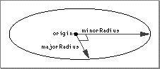
Labels
- ASCII
Ellipse- Binary
elps( =0x656C7073)
Data Format
Vector3D majorAxis Vector3D minorAxis Point3D originField descriptions
majorAxis- The (semi-) major axis of the ellipse.
minorAxis- The (semi-) minor axis of the ellipse.
origin- The center of the ellipse.
Data Size
0 or 36Description
An ellipse is a two-dimensional object defined by an origin (that is, the center of the ellipse) and two orthogonal vectors that define the major and minor radii of the ellipse. The origin and the two endpoints of the major and minor radii define the plane in which the ellipse lies. Attributes may be assigned only to the entire ellipse.Default Surface Parameterization
None.Parent Hierarchy
Shared, shape, geometry.Parent Objects
None.Child Objects
Attribute set (optional).Example
Ellipse ( 2 0 0 #majorRadius 0 1 0 #minorRadius 0 0 0 #origin )
Default Size
For objects of size 0, the default is shown in the example above.NURB Curves
Figure 1-13 shows a NURB curve.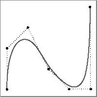
Labels
- ASCII
- NURBCurve
- Binary
- nrbc ( = 0x6E726263 )
Data Format
Uns32 order Uns32 nPoints RationalPoint4D points[nPoints] Float32 knots[order + nPoints]Field descriptions
order- The order of the NURB curve. For NURB curves defined by ratios of cubic B-spline polynomials, the order is 4. In general, the order of a NURB curve defined by polynomial equations of degree n is n+1. The value of this field must be greater than 1.
nPoints- The number of control points that define the NURB curve. The value of this field must be greater than 1.
points[]- An array of rational four-dimensional control points that define the NURB curve. The w coordinate of each control point must be greater than 0.
knots[]- An array of knots that define the NURB curve. The number
of knots in a NURB curve is the sum of the values in the
orderandnPointsfields. The values in this array must be nondecreasing. Successive values may be equal, up to a multiplicity equivalent to the order of the curve; that is, if the order of a NURB curve is n, then at most n successive values may be equal.
Data Size
8 + (nPoints * 16) + ((nPoints + order)
* 4)
Description
A nonuniform rational B-spline (NURB) curve is a three-dimensional projection of a four-dimensional curve. A NURB curve is specified by its order, the number of control points used to define it, the control points themselves, and the knots used to define it. Attributes may be applied only to the entire NURB curve.Default Surface Parameterization
None.Parent Hierarchy
Shared, shape, geometry.Parent Objects
None.Child Objects
Attribute set (optional).Example
NURBCurve ( 4 # order 7 # nPoints 0 0 0 1 # points 1 1 0 1 2 0 0 1 3 1 0 1 4 0 0 1 5 1 0 1 6 0 0 1 0 0 0 0 0.25 0.5 0.75 1 1 1 1 # knots )
Default Size
None.2D NURB Curves
Labels
- ASCII
NURBCurve2D- Binary
nb2c( =0x6E623263)
Data Format
Uns32 order Uns32 nPoints RationalPoint3D points[nPoints] Float32 knots[order + nPoints]Field descriptions
order- The order of the NURB curve. In general, the order of a NURB curve defined by polynomial equations of degree n is n+1. The value of this field must be greater than 1.
nPoints- The number of control points that define the 2D NURB curve. The value of this field must be greater than 1.
points[]- An array of three-dimensional control points that define the 2D NURB curve. The z coordinate of each point in this array must be greater than 0.
knots[]- An array of knots that define the 2D NURB curve. The
number of knots in a NURB curve is the sum of the values in
the
orderandnPointsfields. The values in this array must be nondecreasing, but successive values may be equal.
Data Size
8 + 12 * nPoints + 4 * (order +
nPoints)
Description
See the section "NURB Curves" on page 1-84 for a general description of NURB curves. 2D NURB curves occur only as child objects to trim loop objects, and trim loop objects occur only as child objects to NURB patches. This object is the only two-dimensional curve permitted by 3D metafile version 1.0.Default Surface Parameterization
None.Parent Hierarchy
Data.Parent Objects
Trim loop object (always).Child Objects
None.Default Size
None.Trim Loops
Labels
- ASCII
TrimLoop- Binary
trml( =0x74726D6C)
Data Format
None.Data Size
0Description
A trim loop object is used to bind two-dimensional curves to a NURB patch for the purpose of trimming that patch. As of this release, only 2D NURB curves may be used for trimming.Trimming curves are attached to a NURB patch by placing them in a container the root object of which is a trim loop object and placing that container in a further container together with the relevant NURB patch.
The two-dimensional curves governed by a trim loop object must form a sequence such that the last control point of the ith curve is also the first control point of the i+1st curve, and the last control point of the last curve is also the first control point of the first curve.
Default Surface Parameterization
None.Parent Hierarchy
Data.Parent Objects
NURB patch (always).Child Objects
2D NURB curves (required). A trim loop object may have several child objects.Example
Container ( NURBPatch (...) Container ( TrimLoop ( ) NURBCurve2D (...) . . . NURBCurve2D (...) )
Default Size
None.NURB Patches
Figure 1-14 shows a NURB patch.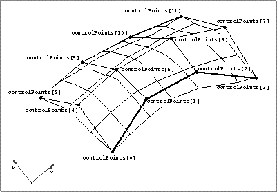
Labels
- ASCII
NURBPatch- Binary
nrbp( =0x6E726270)
Data Format
Uns32 uOrder Uns32 vOrder Uns32 numMPoints Uns32 numNPoints RationalPoint4D points[numMPoints * numNPoints] Float32 uKnots[uOrder + numMPoints] Float32 vKnots[vOrder + numNPoints]Field descriptions
uOrder- The order of a NURB patch in the u parametric direction. For NURB patches defined by ratios of B-spline polynomials that are cubic in u, the order is 4. In general, the order of a NURB patch defined by polynomial equations in which u is of degree n is n+1.
vOrder- The order of a NURB patch in the v parametric direction. For NURB patches defined by ratios of B-spline polynomials that are cubic in v, the order is 4. In general, the order of a NURB patch defined by polynomial equations in which v is of degree n is n+1.
numMPoints- The number of control points in the u parametric direction. The value of this field must be greater than 1.
numNPoints- The number of control points in the v parametric direction. The value of this field must be greater than 1.
points[]- An array of rational four-dimensional control points that define the NURB patch. The size of this array is as indicated in the data format.
uKnots[]- An array of knots in the u parametric direction that define the NURB patch. The values in this array must be nondecreasing, but successive values may be equal. The size of this array is as indicated in the data format.
vKnots[]- An array of knots in the v parametric direction that define the NURB patch. The values in this array must be nondecreasing, but successive values may be equal. The size of this array is as indicated in the data format.
Data Size
16 + (16 * numMPoints * numNPoints) +
(uOrder + numNPoints + vOrder + numMPoints) * 4
Description
A NURB patch is a three-dimensional surface defined by ratios of B-spline surfaces, which are three-dimensional analogs of B-spline curves.Default Surface Parameterization
The default surface parameterization of a NURB patch is as shown in Figure 1-14.Parent Hierarchy
Shared, shape, geometry.Parent Objects
None.Child Objects
Trim curves (optional). A trim curves object is a collection of two-dimensional NURB curves that are used to trim a NURB surface. See the sections "Trim Loops" on page 1-89 and "2D NURB Curves" on page 1-87 for descriptions of these objects.Example
NURBPatch ( 4 #uOrder 4 #vOrder 4 #numMPoints 4 #numNPoints -2 2 0 1 -1 2 0 1 1 2 0 1 2 2 0 1 #points -2 2 0 1 -1 2 0 1 1 0 5 1 2 2 0 1 -2 -2 0 1 -1 -2 0 1 1 -2 0 1 2 -2 0 1 -2 -2 0 1 -1 -2 0 1 1 -2 0 1 2 -2 0 1 0 0 0 0 1 1 1 1 #uKnots 0 0 0 0 1 1 1 1 #vKnots )
- Note
- The control points of a NURB patch are listed in a rectangular order, first in order of increasing v, then in order of increasing u. ·
Default size
None.Ellipsoids
Figure 1-15 shows an ellipsoid.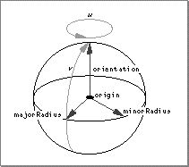
Labels
- ASCII
Ellipsoid- Binary
elpd( =0x656C7064)
Data Format
Vector3D orientation Vector3D majorRadius Vector3D minorRadius Point3D originField descriptions
orientation- The orientation of the ellipsoid.
majorRadius- The major radius of the ellipsoid.
minorRadius- The minor radius of the ellipsoid.
origin- The origin (that is, the center) of the ellipsoid.
Data Size
0 or 48Description
An ellipsoid is a three-dimensional object defined by an origin (that is, the center of the ellipsoid) and three pairwise orthogonal vectors that define the orientation and the major and minor radii of the ellipsoid.Default Surface Parameterization
The default surface parameterization for an ellipsoid is as shown in Figure 1-15. To the left of the major radius, v = 0; to the right of the major radius, v = 1. At the (top of the) orientation vector, and at the bottom of the ellipsoid, u = 0.Parent Hierarchy
Shared, shape, geometry.Parent Objects
None.Child Objects
Attribute set (optional).Example
Ellipsoid ( ) Ellipsoid ( 2 0 0 0 1 0 0 0 1 0 0 0 ) Container ( Ellipsoid ( ) Container ( AttributeSet ( ) DiffuseColor ( 1 1 0 ) ) )
Default size
For objects of size 0, the default is:Caps
Labels
- ASCII
Caps- Binary
caps( =0x63617073)
caps flags
None 0x00000000 Top 0x00000001 Bottom 0x00000002Constant descriptions
None- The parent cone or cylinder shall not have any caps.
Top- The parent cylinder shall have a cap at the end opposite to its base.
Bottom- The parent cone or cylinder shall have a cap at its base.
Data Format
CapsFlags capsField descriptions
caps- A bitfield expression specifying one or more flags.
Data Size
4Description
A cap is a plane figure having the shape of an oval that closes the base of a cone or one end of a cylinder. A cone and a cylinder may each be supplied with a bottom cap. Only a cylinder may be supplied with a top cap. The length of the semimajor axis of a cap is equal to the length of the major radius of its parent object; the length of the semiminor axis of a cap is equal to the length of the minor radius of its parent object. A cap lies in a plane perpendicular to the orientation vector of its parent object. The center of a top cap is at the end of the orientation vector of its parent object; the center of a bottom cap is at the origin of its parent object. A separate attribute set may be assigned to each cap of an object having one or more caps.Parent Hierarchy
Data, cap data.Parent Objects
Cone, cylinder (always).Child Objects
None.Example
Container ( Cone ( ... ) Caps ( Top | Bottom ) Container ( BottomCapAttributeSet ( ) DiffuseColor ( 0 1 0 ) ) )
Default Value
None.Cylinders
Figure 1-16 shows a cylinder.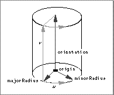
Labels
- ASCII
Cylinder- Binary
cyln( =0x63796C6E)
Data Format
Vector3D orientation Vector3D majorRadius Vector3D minorRadius Point3D originField descriptions
orientation- The orientation of the cylinder.
majorRadius- The major radius of the cylinder.
minorRadius- The minor radius of the cylinder.
origin- The origin (that is, the center of the base) of the cylinder.
Data Size
0 or 48Description
A cylinder is a three-dimensional object defined by an origin (that is, the center of the cylinder) and three mutually perpendicular vectors that define the orientation and the major and minor radii of the cylinder. A cylinder may include a top cap, a bottom cap, or both. Attributes may be assigned to each included cap, to the face of the cylinder, and to the entire cylinder.Default Surface Parameterization
The default surface parameterization for a cylinder is as shown in Figure 1-16.Parent Hierarchy
Shared, shape, geometry.Parent Objects
None.Child Objects
Caps (top), top cap attribute set, caps (bottom), bottom cap attribute set, face cap attribute set, attribute set. All child objects are optional.Example
Cylinder ( ) Cylinder ( 0 2 0 0 1 0 0 0 1 0 0 0 ) Container ( Cylinder ( ) Caps ( Bottom | Top ) Container ( BottomCapAttributeSet ( ) Container ( AttributeSet ( ) DiffuseColor ( 0 1 0 ) ) ) Container ( FaceCapAttributeSet ( ) Container ( AttributeSet ( ) DiffuseColor ( 1 0 1 ) ) ) Container ( TopCapAttributeSet ( ) Container ( AttributeSet ( ) DiffuseColor ( 1 1 0 ) ) ) )
- Note
- In the above example, color attributes are attached to the surface of the cylinder very indirectly. As you see, color objects are elements of ordinary attribute sets rather than of cap attribute sets. Those attribute sets are elements of containers, which, in turn, are elements of cap attribute sets. The cap attribute sets serve to bind the ordinary attribute sets to the caps of the cylinder. ·
Default size
For objects of size 0, the default is:Disks
Figure 1-17 shows a disk.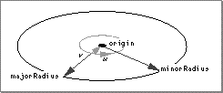
Labels
- ASCII
Disk- Binary
disk( =0x6469736B)
Data Format
Vector3D majorRadius Vector3D minorRadius Point3D originField descriptions
majorRadius- The major radius of the disk.
minorRadius- The minor radius of the disk.
origin- The center of the disk.
Data Size
0 or 36Description
A disk is a two-dimensional object defined by an origin (that is, the center of the disk) and two vectors that define the major and minor radii of the disk. A disk may have the shape of a circle, ellipse, or other oval. Attributes may be assigned to the entire disk only.Default Surface Parameterization
The default surface parameterization for a disk is as shown in Figure 1-17.Parent Hierarchy
Shared, shape, geometry.Parent Objects
None.Child Objects
Attribute set (optional).Example
Disk ( 1 0 0 # majorRadius 0 1 0 # minorRadius 0 0 0 # origin )
Default Size
For objects of size 0, the default is as in the previous example.Cones
Figure 1-18 shows a cone.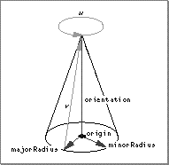
Labels
- ASCII
Cone- Binary
cone( =0x636F6E65)
Data Format
Vector3D orientation Vector3D majorRadius Vector3D minorRadius Point3D originField descriptions
orientation- The orientation of the cone. This vector also specifies the height of the cone.
majorRadius- The major radius of the cone.
minorRadius- The minor radius of the cone.
origin- The origin (that is, the center of the base) of the cone.
Data Size
0 or 48Description
A cone is a three-dimensional object defined by an origin (that is, the center of the base) and three vectors that define the orientation and major and minor radii of the cone. A cap may be attached to the base of a cone. Attributes may be assigned to the cap and face of a cone, and also to the entire cone.DEFAULT SURFACE PARAMETERIZATION
The default surface parameterization for a cone is as shown in Figure 1-18.Parent Hierarchy
Shared, shape, geometry.Parent Objects
None.Child Objects
Caps (optional), bottom cap attribute set (optional), face cap attribute set (optional), attribute set (optional). A cone must have a bottom cap in order to have a bottom cap attribute set. UseCaps ( Bottom ) to
set a cap on the base of a cone.
Example
Container ( Cone ( 0 1 0 # orientation 0 0 1 # major axis 1 0 0 # minor axis 0 0 0 # origin ) Caps ( Bottom ) Container ( BottomCapAttributeSet ( ) Container ( AttributeSet ( ) DiffuseColor ( 1 0 0 ) ) ) Container ( FaceCapAttributeSet ( ) Container ( AttributeSet ( ) DiffuseColor ( 0 0 1 ) ) ) )
- Note
- See the note in the section "Cylinders" for an explanation of cap attribute sets. ·
Default Size
For objects of size 0, the default is:1 0 0 0 1 0 0 0 1 0 0 0
Tori
Figure 1-19 shows a torus.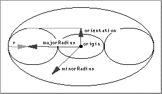
A torusLabels
- ASCII
Torus- Binary
tors( =0x746F7273)
Data Format
Vector3D orientation Vector3D majorRadius Vector3D minorRadius Point3D origin Float32 ratioField descriptions
orientation- The orientation of the torus. This field specifies the axis of rotation and half-thickness of the torus. The orientation must be orthogonal to both the major and minor radii.
majorRadius- The major radius of the torus.
minorRadius- The minor radius of the torus.
origin- The center of the torus.
ratio-
The ratio of the length of the major radius of the rotated
ellipse to the length of the orientation vector of the
torus. (In Figure 1-19, this is
r � length(
orientation.) This field indicates the eccentricity of a vertical cross-section through the torus (wide if r > 1, narrow if r < 1).
Data Size
0 or 52Description
A torus is a three-dinensional object formed by the rotation of an ellipse about an axis in the plane of the ellipse that does not cut the ellipse. The major and minor radii of the torus are the distance of the center of the ellipse from that axis.Default Surface Parameterization
The default surface parameterization for a torus is as shown in Figure 1-20.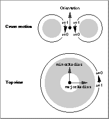
The defalt surface parameterization of a torusParent Hierarchy
Shared, shape, geometry.Parent Objects
None.Child Objects
Attribute set (optional).Examples
Container ( Torus ( 0 .2 0 #orientation 1 0 0 #majorRadius 0 0 1 #minorRadius 0 0 0 #origin .5 #ratio ) Container ( AttributeSet ( ) DiffuseColor (1 1 0) ) )
Default Size
For objects of size 0, the default is:1 0 0 0 1 0 0 0 1 0 0 0 1
Markers
Figure 1-21 shows a marker.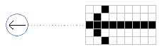
Labels
- ASCII
Marker- Binary
mrkr( =0x6D726B72)
Data Format
Point3D location Uns32 width Uns32 height Uns32 rowBytes Int32 xOffset Int32 yOffset RawData data[imageSize]Field descriptions
location- The origin of the marker.
width- The width of the marker, in pixels. The value of this field must be greater than 0.
height- The height of the marker, in pixels. The value of this field must be greater than 0.
rowBytes- The number of bytes in a row of the marker.
xOffset- The number of pixels, in the horizontal direction, to
offset the upper-left corner of the marker from the origin
specified in the
locationfield. yOffset- The number of pixels, in the vertical direction, to
offset the upper-left corner of the marker from the origin
specified in the
locationfield. data[]- This field defines a bitmap that specifies the image to be drawn.
Data Size
32 + (rowBytes *
height) + padding
Description
A marker is a two-dimensional object typically used to indicate the position of an object (or part of an object) in a window. The marker is drawn perpendicular to the viewing vector, aligned with the window, with its origin at the specified location. A marker is always drawn with the same size, shape, and orientation, no matter what transformations are active. However, a transformation may move the origin and thereby affect the position of the marker in the window. Attributes may be assigned only to the entire marker; these attributes apply to those bits in the bitmap that are set to 1.Default Surface Parameterization
None.Parent Hierarchy
Shared, shape, geometry.Parent Objects
None.Child Objects
Attribute set (optional).Example
Container ( Marker ( 0.5 0.5 0.5 # location 56 # width 6 # height 7 # rowBytes -28 # xOffset -3 # yOffset 0x7E3C3C667E7C18606066666066187C3C 0x607E7C661860066066607C1860066666 0x6066007E3C3C667E6618 ) Container ( AttributeSet ( ) DiffuseColor ( 0.8 0.2 0.6 ) ) ) Marker ( 0 0 0 # location 32 # width 32 # height 4 # rowBytes -16 # xOffset -16 # yOffset 0x001000402167E0201098181011300C08 0x1E60C6860D403A461880274CB0C041FC 0x60A0811C608301193080119E30908B38 0x18604E300CC1CA3037B23C7043181870 0x0387E82001A01DC000502B4000502A80 0x00506A80005DD3000076220000484C00 0x00501800006060000041800000420000 0x0042000000FF000000FF000000FF0000 )
Default Size
None.Attributes
Diffuse Color
Labels
- ASCII
DiffuseColor- Binary
kdif (=0x6B646966)
Data Format
ColorRGB diffuseColorField descriptions
diffuseColor- A structure having three fields: red, green, blue. The permitted values of these fields are 32-bit floating-point numbers in the closed interval [0, 1], where 0 is the minimum value and 1 is the maximum value.
Data Size
12Description
Diffuse color is the color of the light of a diffuse reflection (the type of reflection that is characteristic of light reflected from a dull, non-shiny surface). A diffuse color attribute specifies the color of the light diffusely reflected by the objects to which it is assigned.Parent Hierarchy
Element, attribute.Parent Objects
Attribute sets. A diffuse color object always has a parent object.Child Objects
None.Example
Container ( AttributeSet ( ) DiffuseColor ( 0 1 0 ) )
Specular Color
Labels
- ASCII
SpecularColor- Binary
kspc( =0x6b737063)
Data Format
ColorRGB specularColorField descriptions
specularColor- A structure having three fields: red, green, blue. The permitted values of these fields are 32-bit floating-point numbers in the closed interval [0, 1], where 0 is the minimum value and 1 is the maximum value.
Data Size
12Description
Specular color is the color of the light of a specular reflection (specular reflection is the type of reflection that is characteristic of light reflected from a shiny surface). A specular color attribute specifies the color of the light specularly reflected by the objects to which it is assigned. Note that the diffuse color and specular color assigned to the same object can differ.Parent Hierarchy
Element, attribute.Parent Objects
Attribute sets. A specular color object always has a parent object.Child Objects
None.Example
Container ( AttributeSet ( ) DiffuseColor ( .1 .1 .1) # near-black SpecularColor ( 1 1 1 ) # white )
Specular Control
Labels
- ASCII
SpecularControl- Binary
cspc( =0x63737063)
Data Format
Float32 specularControlField descriptions
specularControl- The exponent to be used in computing the intensity of the specular color of one or more objects. The value of this field must be greater than or equal to 0, and is normally an integer greater than or equal to 1.
Data Size
4Description
A specular control object specifies the specular reflection exponent used in the Phong and related illumination models.Parent Hierarchy
Element, attribute.Parent Objects
Attribute sets. A specular control object always has a parent object.Child Objects
None.Example
Container ( AttributeSet ( ) DiffuseColor ( 1 0 0 ) # red SpecularColor ( 1 1 1 ) # white highlights SpecularControl ( 60 ) # sharp fall-off ) Ellipsoid( ) )
Transparency Color
Labels
- ASCII
TransparencyColor- Binary
kxpr( =0x6B787072)
Data Format
ColorRGB transparencyField descriptions
transparency- A structure having three fields: red, green, blue. The permitted values of these fields are 32-bit floating-point numbers in the closed interval [0, 1], where 0 is the minimum value and 1 is the maximum value.
Data Size
12Description
A transparency color attribute affects the amount of color allowed to pass through an object that is not opaque. The transparency color values are multiplied by the color values of obscured objects during pixel color computations. Thus, the transparency color values ( 1 1 1 ) indicate complete transparency and the values ( 0 0 0 ) indicate complete opacity. The values ( 0 1 0 ) indicate that all light in the green color channel is allowed to pass through the foreground object, and no light in the red and blue channels is allowed to pass through the foreground object.Parent Hierarchy
Element, attribute.Parent Objects
Attribute sets. A transparency color object always has a parent object.Child Objects
None.Example
Container ( AttributeSet ( ) TransparencyColor ( .5 .5 .5 ) )
Surface UV
Labels
- ASCII
SurfaceUV- Binary
sruv( =0x73727576)
Data Format
Param2D surfaceUVField descriptions
surfaceUV- The values in the two fields of this structure specify a surface uv parameterization for one or more objects. Both of these values must be floating-point numbers greater than or equal to 0 and less than or equal to 1.
Data Size
8Description
A surface UV object is used to specify a surface uv parameterization for one or more objects. A surface UV object is normally used in conjunction with a trim shader.Parent Hierarchy
Element, attribute.Parent Objects
Attribute set. A Surface UV object always has a parent object.Child Objects
None.Example
Container ( Mesh ( ... ) Container ( VertexAttributeSetList ( 200 Include 4 10 21 22 11 ) Container ( AttributeSet ( ) SurfaceUV ( 0 0 ) ) Container ( AttributeSet ( ) SurfaceUV ( 0 1 ) ) Container ( AttributeSet ( ) SurfaceUV ( 1 1 ) ) Container ( AttributeSet ( ) SurfaceUV ( 1 0 ) ) ) )
Shading UV
Labels
- ASCII
ShadingUV- Binary
shuv( =0x73687576)
Data Format
Param2D shadingUVField descriptions
shadingUV- The values in the two fields of this structure specify parameters in u and v for the purpose of shading. Both of these values must be floating-point numbers greater than or equal to 0 and less than or equal to 1.
Data Size
8Description
A Shading UV object is used to specify uv parameters for the purpose of shading. A shading UV object is normally used in conjunction with a texture shader.Parent Hierarchy
Element, attribute.Parent Objects
Attribute set. A shading UV object always has a parent object.Child Objects
None.Example
Container ( AttributeSet ( ) ShadingUV ( 0 0 ) )
Surface Tangents
Labels
- ASCII
- SurfaceTangent
- Binary
- srtn ( = 0x7372746E )
Data Format
Vector3D paramU Vector3D paramVField descriptions
- paramU
- The tangent in the u parametric direction.
- paramV
- The tangent in the v parametric direction.
Data Size
24Description
A surface tangent object is used to specify three-dimensional tangents to the surface of a geometric object. These tangents serve to indicate the direction of increasing u and v in the surface parameterization of that object.Parent Hierarchy
Element, attribute.Parent Objects
Attribute set. A surface tangent always has a parent object.Child Objects
None.Example
Container ( AttributeSet ( ) SurfaceUV ( 0 0 ) SurfaceTangent ( 1 0 0 0 1 0 ) )
3D Metafile Reference © Apple Computer, Inc.